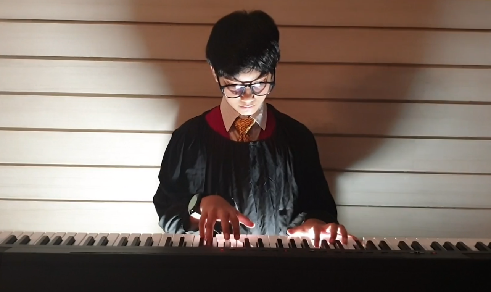

Hi
When I was about 4, I really wanted to learn how to play the piano. I just liked what you could do with the instrument. I had been playing an instrument at school for years so I knew the basics of music.
I found a local music teacher to teach me the basics.
I play a wide variety of music. When i first started I was pushed to play classical, which I still play and enjoy, but I've expanded into pop, new-age, and a little jazz.
My most recent piece of music is a piano sonata by Mozart. I play other composers such Yann Tiersen, Eric Satie, and even Christina Perri.
Every period has piano pieces to play, even up to very modern music. There are still dedicated piano composers who write piano music for a living. The music you hear on the radio isn't all that is out there.
The Future
I don't plan to play piano for a living. I am definitely not good enough. To become a professional pianist you have to have at least a bachelors degree in your instrument and then you must attend a conservatory to play the instrument for many years. Even then your chances of being hired as a pianist are slim.
I only play as a hobby. It's something to do in my spare time.
Here are some of my photos playing the piano

